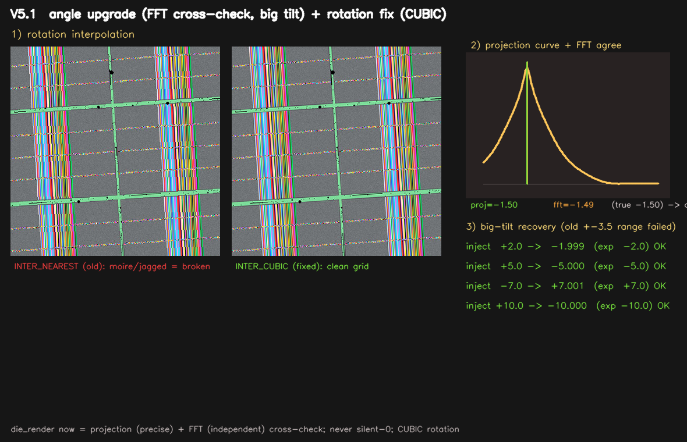
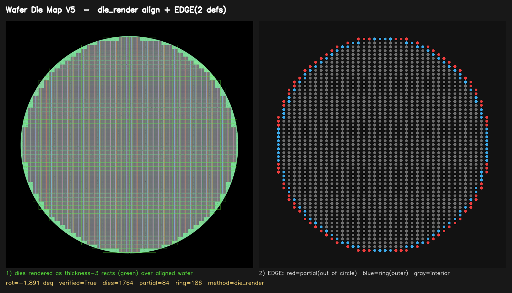

두 단서 계산
Projection 각도와 FFT 각도를 독립적으로 측정합니다.
왜 이렇게 설계했는가 · numpy + opencv-python · Python 3.9
다이 격자 렌더링 기반 die_render 방식이 기본값.
전체 격자를 활용해 오차 ≤ 0.003°
is_edge_partial (원 밖 걸침) +is_edge_ring (최외곽 격자 링) 항상 저장
0도여도 반환. 출력 크기 10000×10000 고정으로 좌표 일관성 보장
V5.1 — 세 가지 핵심 개선
NEAREST → CUBIC 으로 변경.
다이 격자 계단/모아레 깨짐 제거.
2개 독립 단서 합의.
큰 기울기(±10°)도 오차 ≤ 0.001°.
angle_confidence, angle_agree.
새 함수 measure_wafer_angle_robust().
함수 _rotate_wafer_keep_size 의 보간법을 변경했습니다.
V5.1 에서 각도는 두 개의 독립 단서를 교차검증하여 결정됩니다.
| 단서 | 방법 | 특징 |
|---|---|---|
| Projection | 중앙 ROI Otsu 이진화 후 후보각 회전, 열/행 투영 분산 최대화 | 정밀(sub-0.01°), 이미지 픽셀만 사용 — 격자 검출 실패에 독립적 |
| FFT | 전체 이미지 2D 푸리에 진폭 스펙트럼에서 격자 축 peak를 4φ 합벡터로 추정 | 이미지 전체 반영, projection과 완전 독립 |
detect_grid 에 의존 → 격자 검출 실패 시 조용히 0도 반환하는 약점이 있었습니다.angle_agree=True, angle_confidence≈0.97| 이름 | 타입 | 설명 |
|---|---|---|
dm.angle_confidence |
float (0~1) | 각도 측정 신뢰도. 두 단서 합의 시 ≈ 0.97 |
dm.angle_agree |
bool | False 면 해당 이미지의 각도를 수동 검토 권장 |
새 공개 함수
measure_wafer_angle_robust(image, cx, cy, r) -> dict
# 반환 키: angle, confidence, agree, projection, fft, candidates
v5_angle_upgrade.png — 좌: NEAREST vs CUBIC 회전 줌 비교 / 중: projection 곡선+FFT 일치 / 우: 큰 기울기(+2/+5/-7/+10°) 복원 결과표.make_angle_upgrade_viz.py 로 재생성 가능.V4까지는 각도 정렬을 단 하나의 특징점에 의존했습니다.
| 방식 | 의존 정보 | 문제점 |
|---|---|---|
notch | 웨이퍼 하단 노치(V자 홈) 1개 | 노치가 흐리거나 가려지면 실패 |
vertical_line | 이미지 내 수직선 1개 | 선이 끊기거나 노이즈 있으면 오류 |
none | — | 정렬 생략 → 좌표 틀어짐 |
실제 웨이퍼를 관찰한 결과, 소잉 라인의 폭은 cv2.rectangle(thickness=3) 의 두께와 일치합니다.
따라서 검출된 다이 격자에서 두께 3짜리 사각형을 모두 그리면 → 실제 소잉 라인 격자 구조와 동일한 바이너리 마스크를 얻을 수 있습니다.
render_die_grid_mask()렌더링된 격자 마스크의 중앙 ROI를 잘라내고, Otsu 이진화를 적용합니다.
Otsu를 쓰는 이유: 다이 본체가 밝든 어둡든, 소잉 라인이 밝든 어둡든 — 이진화가 항상 올바르게 격자 구조를 분리합니다 (밝기 극성 독립성).
그 다음 이 이진 이미지를 여러 각도로 회전하면서 열(column) 분산 + 행(row) 분산의 합을 측정합니다.
measure_die_render_angle()| 항목 | die_render | notch | vertical_line |
|---|---|---|---|
| 사용 정보량 | 수십~수백 개 다이 격자 전체 | 노치 1개 | 선 1개 |
| 양 축(수평+수직) 동시 사용 | O (열+행 분산 합산) | X | X |
| 격자 위상(origin)과 무관 | O | — | — |
| 다이 밝기/극성에 무관 | O (Otsu 이진화) | △ | △ |
| 각도 오차 | ≤ 0.003° | ~0.02–0.07° | ~0.02–0.07° |
render_die_grid_mask() # thickness=3 격자 마스크 생성
measure_die_render_angle() # 투영 분산 최대화로 각도 측정
align_wafer_by_die_render() # 위 두 함수를 이용한 정렬 실행"엣지 다이"의 의미는 분석 목적에 따라 다릅니다.
| 목적 | 관심 있는 엣지 정의 | 속성 |
|---|---|---|
| 수율 분석 (Yield) | 원 밖으로 잘린 부분 다이 | is_edge_partial |
| 근접 효과, 격자 위상 분석 | 이웃 다이가 없는 최외곽 다이 | is_edge_ring |
V4까지는 하나만 저장 → 목적 변경 시 다이 맵 재생성 필요.
V5는 두 정의를 항상 함께 계산·저장합니다.
| edge_mode | is_edge 의미 | 비고 |
|---|---|---|
"circle" | is_edge_partial 과 동일 | 수율 분석에 적합 |
"ring" | is_edge_ring 과 동일 | 격자 분석에 적합 |
"both" (기본값) | partial OR ring | 두 조건 중 하나라도 해당 |
is_edge_partial, is_edge_ring 은 edge_mode와 무관하게 항상 저장됩니다.
locate_die() 결과에도 세 값이 모두 반환됩니다.
| V4 | V5 | |
|---|---|---|
| 0도 or none 시 aligned_image | 없거나 원본 그대로 | 항상 반환 |
| 출력 이미지 크기 | 각도에 따라 가변 (커질 수 있음) | 항상 10000×10000 고정 |
| 좌표 공간 | 각도마다 달라짐 | 항상 aligned_image 기준으로 일관 |
warpAffine은 회전 각도에 따라 출력 크기가 달라집니다. 크기가 변하면 다이 픽셀 좌표도 이미지마다 달라져 다운스트림 코드가 복잡해집니다. 10000×10000으로 고정하면 좌표 공간이 항상 동일하게 유지됩니다.
# 사용 예
dm = build_die_map("wafer.jpg")
img = dm.aligned_image # 항상 (10000, 10000, 3) 또는 (10000, 10000)
print(img.shape) # → (10000, 10000, 3)die_render 격자(두께 3) 오버레이 + EDGE 2종 구분 맵

v5_overview.png — die_render 오버레이(파란 격자) + 부분 다이(노란색) + 링 다이(보라색) 구분 맵. make_v5_viz.py 로 재생성 가능.die_render (기본): render_die_grid_mask → Otsu 이진화 → 투영 분산 최대화 → 잔차 0까지 반복notch / vertical_line / none
is_edge_partial (원 밖 걸침) 과 is_edge_ring (최외곽 격자 링) 을 모든 다이에 대해 계산합니다.build_die_map() 이 완성된 WaferDieMap 객체를 반환합니다.| 방식 | 전형적 각도 오차 | 비고 |
|---|---|---|
die_render (V5 기본) |
≤ 0.003° | 전체 격자 활용, 양 축 동시 |
notch |
~0.02–0.07° | 노치 1개 의존 |
vertical_line |
~0.02–0.07° | 수직선 1개 의존 |
from wafer_die_map_v5 import build_die_map, locate_die
# 기본 사용 (die_render 정렬, edge_mode="circle")
dm = build_die_map("wafer.jpg")
# 각도 정렬 방식 변경
dm = build_die_map("wafer.jpg", angle_align_method="notch")
# 두 가지 엣지 정의 모두 활성화
dm = build_die_map("wafer.jpg", edge_mode="both")
# 정렬된 이미지 (항상 10000x10000)
img = dm.aligned_image
# 특정 영역의 다이 조회
r = locate_die(dm, bbox=(x1, y1, x2, y2))
print(r["die_index"]) # (row, col)
print(r["die_rect_px"]) # (x1, y1, x2, y2) 픽셀
print(r["real_coord"]) # (x_mm, y_mm)
print(r["is_edge"]) # edge_mode 기준 엣지 여부
print(r["is_edge_partial"]) # 원 밖 걸침 여부
print(r["is_edge_ring"]) # 최외곽 링 여부
print(r["edge_mode"]) # 빌드 시 edge_mode 값